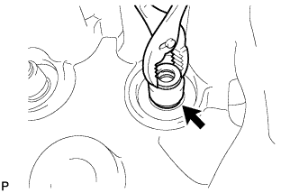
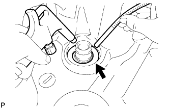

CYLINDER HEAD > DISASSEMBLY |
| 1. REMOVE VALVE |
 |
Place the cylinder head on a wooden block.
Using SST, compress the inner compression spring and remove the valve spring retainer lock.
Remove the inner compression spring, valve spring retainer and valve.
| 2. REMOVE VALVE STEM OIL SEAL |
 |
Using pliers, remove the valve stem oil seal.
| 3. REMOVE VALVE SPRING SEAT PLATE WASHER |
 |
Using compressed air and a magnetic finger, remove the valve spring seat plate washer by blowing air.
| 4. REMOVE NOZZLE HOLDER CLAMP SEAT |
 |